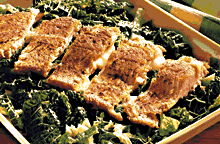

Keittokirja
Olet sivuillani kävijä.
Sisällysluettelo
- Broileriruokia
- Juomia
- Jälkiruokia
- Kakkureseptejä
- Kalaruokia
- Kastikkeita
- Keittoja
- Leipäreseptejä
- Liharuokia
- Pastaruokia
- Pullareseptejä
- Pikkuherkkuja
- Atsovärit
- seti@kauppinen.com
Sivut päivitetty 9.9.2019
Kalaruokia
Keittokirjan etusivulle.
Kermainen lohikeitto (Keittoruoka)Appelsiini-lohivuoka
Currylohi
Katkarapuhöystö
Juustokala
Lohirahka
Punertavat lohiraviolit
Vappulohi
Limettilohi

Appelsiini-lohivuoka
- ½ kg kirjolohifilettä
- sitruunapippuria
- yrttisuolaa
- basilikaa
- 200 g herkkusieniä
Kastike: - 2 prk appelsiini-HOVI juustoa
- 1 appelsiinin mehu
- yrttisuolaa
- sitruunapippuria
Leikkaa file viipaleiksi ja ripottele niille mausteet sekä viipaloidut herkkusienet. Kääri viipaleet rulliksi ja lado voideltuun vuokaan. Notkista juusto appelsiinin mehulla ja mausta seos. Kaada seos kalarullien päälle ja kypsennä 200°C noin puoli tuntia. Tarjoa rullien lisänä yrttiriisiä ja salaattia.
[Kalahakemiston alkuun]
Currylohi
- 1 kirjolohifile tai pala merilohen fileestä
- merisuolaa
- vahvaa currya
- rouhittua mustapippuria
- 2-3 dl ruokakermaa
Nypi fileestä ruodot pois pihdeillä. Poista fileen vatsasta ja selästä näkyvä rasva. Sirottele fileen päälle reilusti currya (kermaa pehmentää makua) sekä hieman suolaa. Osan currysta voi korvata kurkumalla. Päälle vielä ripaus pippuria myllystä tai vaihtoehtoisesti Herbes de Provence -yrttiseosta (Santa Maria). Anna maustua yön yli jääkaapissa tai jos kala syödään vielä myöhemmin niin laita kala pakastimeen muutaman tunnin jälkeen. Paista 200°C uunissa nahkapuoli ylöspäin noin 15 minuuttia. Poista fileestä nahka ja lisää ruokakerma. Paista vielä noin 15 minuuttia kunnes ruoka alkaa saada väriä. Tarjoile perunamuusin ja ruisleivän kanssa.
[Kalahakemiston alkuun]
Katkarapuhöystö
- 250 g katkarapuja
- 1 tlk herkkusieniä
- 1 iso sipuli
- 1 pieni purjo
- 1 pieni paprika
- 1 rkl voita tai margariinia
- n. 3 dl kermaa
- 1 rkl vehnäjauhoja
- ½ sitruunan mehu
- 1 nippu tilliä
- valkosipulia
- 1 tlk tomaattisosetta
- suolaa, currya, mustapippuria
Viipaloi herkkusienet, suikaloi paprika ja hienonna sipuli. Halkaise, huuhdo ja hienonna purjo. Sulata rasva kasarissa ja kiehauta siinä hienonnettu sipuli ja herkkusieniviipaleet. Lisää joukkoon purjo ja paprika. Kaada sekaan kerma johon on sekoitettu vehnäjauhot. Anna hautua miedolla lämmöllä noin 10 minuuttia. Lisää katkaravut, tomaattisose, sitruunamehu, hienonnettu tilli ja muut mausteet. Höystön ei enää tarvitse kiehua mutta kuumenna se hyvin. Tarjoile riisin kera.
[Kalahakemiston alkuun]
Juustokala
- 600 g fileoitua lohta
- 1 sipuli
- 1 purjosipuli
- 200 g tuoreita herkkusieniä
- 1-2 rkl öljyä
- ½ nippua tilliä tai kirveliä
- ¼ tl sitruunapippuria
- 1 prk (150-200 g) ranskankermaa
- 100 g parmesanraastetta tai sinihomejuustoa
Hienonna sipuli ja halkaistu purjo. Paloittele herkkusienet. Kiehauta sipulit pannulla ja lisää herkkusienet. Mausta seos pippurilla ja hienonnetulla tillillä. Anna hautua kannen alla hetken aikaa. Kaada sipulisieniseos laakeaan uunivuokaan. Fileoi kala nahattomaksi ja leikkaa fileet 2-3 cm levyisiksi viipaleiksi. Pane kalapalat sipulisieniseoksen päälle. Sekoita juusto ranskankerman joukkoon. Levitä seos kalan päälle. Uuni 200°C n. 20 minuuttia, kunnes kala on kypsää ja saanut väriä juustosta. Tarjoa perunoiden ja salaatin kera.
[Kalahakemiston alkuun]
Lohirahka
- 1 prk rahkaa
- 1 prk kermaviiliä
- 150-200 g kylmäsavu kirjolohta
- 150-200 g graavisuolattua kirjolohta
- 1 sipuli tai pala purjoa
- n. ½ dl silputtua tilliä tai ruohosipulia
- 2 rkl sokeria
- 1 tl sitruunapippuria
- ripaus valkopippuria
- 2 dl kuohukermaa
Koristeeksi: - muutama viipale lohta
- ruohosipulia
- sitruunalohkoja
Leikkaa molemmat lohet ensin viipaleiksi ja siitä edelleen pieniksi kuutioiksi. Hienonna sipuli sekä tilli. Sekoita ainekset rahka-kermaviili- seokseen. Mausta sokerilla, sitruuna- ja valkopippurilla. Lisää lopuksi vaahdoksi vatkattu kerma. Anna maustua kylmässä 1-2 tuntia tai pidempään.
[Kalahakemiston alkuun]
Punertavat lohiraviolit
| Pastataikina: | Kastike: | |||
| 400 g (durum)vehnäjauhoja | 1 rkl öljyä | |||
| ½ tl suolaa | 1 sipuli | |||
| 2 munaa | 2 punaista paprikaa | |||
| 1 rkl öljyä | 3 dl valkoviiniä | |||
| 2 keitettyä ja soseutettua porkkanaa | 200 g tuorejuustoa esim. valkosipuli | |||
| suolaa | ||||
| Täyte: | valkopippuria | |||
| 200 g kylmäsavulohta | tilliä | |||
| hienonnettua tilliä ja sitruunapippuria |
Mittaa kulhoon ainekset. Nypi taikina kimmoisaksi. Lisää tarvittaessa jauhoja. Anna taikinan rauhoittua kylmässä noin 1 tunti. Kauli taikina millin levyksi. Ota pyöreällä muotilla paloja, voitele ne, täytä ja sulje reunat haarukalla painamalla. Valmista kastike. Kääntele hienonnettuja kasviksia öljyssä. Lisää viini. Keitä pehmeäksi. Soseuta kasvikset esim. sauvasekoittimella. Lisää juusto ja mausta. Keitä raviolit kypsiksi suolalla ja öljytilkalla maustetussa vedessä. Tarjoa kastikkeen ja juustoraasteen kera.
[Kalahakemiston alkuun]
Vappulohi
- 2 dl kuohu- tai hyla-vispikermaa
- 400 g kylmäsavu- tai graavilohta
- 1½ dl ranskankermaa
- 1 pieni sipuli
- ripaus valkopippuria
- 1-2 tl sitruunamehua
Koristeluun:
- tilliä
Hienonna kalan liha monitoimikoneella tai veitsellä aivan hienoksi. Vatkaa kerma pehmeäksi vaahdoksi. Hienonna sipuli. Yhdistä ainekset varovasti sekoittaen. Anna seoksen maustua jääkaapissa 1-2 tuntia. Tarjoa keitettyjen tai uuniperunoiden kera tai esim. hapankorppujen tai leivän päällysteenä.
[Kalahakemiston alkuun]
Limettilohi (Maku -lehti 08/2005)
- 500 g lohifile
- 1-2 limettiä
- n. 2½ dl mustaleimaista parmesan -juustoa raastettuna
Nypi lohifilee ruodottomaksi. Tee viillot nahkaan asti ja työnnä viiltoihin limetin viipleita, viillot täyteen. Anna maustua muutama tunti. Ripottele lohen päälle parmesan raastetta, älä ripottele limetinviipaleiden päälle. Kypsennä uunissa 15-20 minuuttia 200°C. Tarjoile keitettyjen perunoiden ja kasvisten kera.
Oma viinisuositukseni: Pfaff Pinot Blanc.
[Kalahakemiston alkuun]